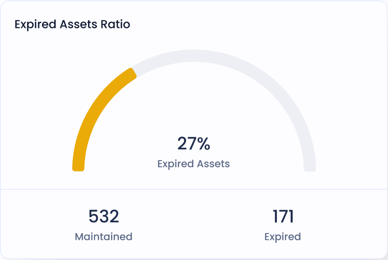

Cutting-edge
Hospital IOT System
Hospital IOT System
Designed to revolutionize asset and employee
management within healthcare facilities
management within healthcare facilities
View features

The iTrack Advantage
Why iTrack Stands Out as Your Top Choice for Hospital IoT Solutions
Comprehensive
IoT Solution
Interactive
Spatial Map
Efficient Asset
Tracking
Precise Employee Monitoring
Core Features
Empowering Hospitals with Advanced Functionality
AI Powered
Health Analytics
We provide multiple AI Health analytics system for to ensure patient
health is our priority. Here’s a few health metrics that we measure.
Track assets and team
Gamification and reward system
Charts and graphs


Live location
For Staff & Assets
We provide multiple AI Health analytics system for to ensure patient
health is our priority. Here’s a few health metrics that we measure.
0.145ms
Response speed
50M+
LLM Datas
99.8%
Tracking accuracy
0.2ms
Update speed
Our Reputation
Building Trust, One Success at a Time
412+
Companies helped
20M
Patients healed
15
Years of excellence
97%
Patient satisfaction


iTrack has revolutionized how we manage our hospital resources.
The real-time asset tracking and employee monitoring have
significantly improved our operational efficiency.
It's like having an extra set of eyes and hands to ensure that we can deliver the best patient care possible. iTrack is an invaluable addition to our healthcare ecosystem." - Dr. Sarah Miller, Chief Medical Officer, HealthWell Hospital
It's like having an extra set of eyes and hands to ensure that we can deliver the best patient care possible. iTrack is an invaluable addition to our healthcare ecosystem." - Dr. Sarah Miller, Chief Medical Officer, HealthWell Hospital

Dr Mahroos Ali
Chairman @ ANFAS Hospital Group
Hear what our customers have to say about us
Discover what our satisfied clients have to say about the impact of
TCI's innovative solutions on their businesses and industries.
TCI's innovative solutions have been a game-changer for our
hospital. Their iTrack system has revolutionized the way we manage
our assets and staff. We're more efficient, responsive, and our
patients are reaping the benefits. TCI is a true partner in our
pursuit of excellence.

Adnan Jaweed
Founder @ Supa Stellar
TCI's technology solutions have optimized our logistics operations
in ways we never imagined. With their real-time IoT solutions, our
supply chain is smarter, more responsive, and more cost-effective.
We couldn't be happier with the results.
Mahroos Ali
Founder @ VioletMars
Working with TCI has been a game-changer for our healthcare startup.
Their miDoc platform has provided us with the tools to offer our
patients top-notch care. We're seeing improved engagement and
patient outcomes. TCI is helping us set new standards in healthcare.

Meraj Asif
Founder @ midoc
Frequently Asked Questions
Answers to common questions
What industries does TCI serve with its innovative solutions?
What sets TCI apart in the field of AI and enterprise solutions?
The Cloud Intelligence Inc. unique blend of research work of AI in healthcare that brings innovative technology integration, customized solutions, commitment to transparency, user-centered design, data security, inclusive culture, strong partnerships, and adaptability sets it apart in the AI and enterprise solutions industry.
How does TCI's IoT system benefit the healthcare industry?
Our IoT system greatly benefits the healthcare industry by:
- Improving asset tracking.
- Maximizing operational efficiency
- Enabling real-time patient monitoring
Can I request a demo of TCI's solutions for my business?
please feel free to book for an discovery call just for 30 mins.
https://calendly.com/maidrees/discovery-call?month=2023-11
https://calendly.com/maidrees/discovery-call?month=2023-11
Is data security a priority for TCI's solutions?
Absolutely, at TCI, we prioritize data security in all of our solutions.
We leverage:
We are constantly updating and enhancing our security measures to deal with evolving security threats effectively for our solutions.
We leverage:
- State-of-the-art encryption techniques
- Rigorous compliance protocols
We are constantly updating and enhancing our security measures to deal with evolving security threats effectively for our solutions.
TCI is a technology innovator, specializing in AI, IoT, and
cloud-based enterprise solutions. We transform industries,
address business problems, and empower healthcare and logistics
professionals through cutting-edge technology."
About
Solutions
Testimonials
FAQ
Terms
Privacy Policy